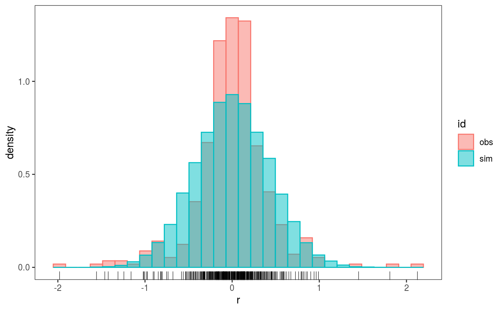

This function extracts the residuals or responses of a fitted GAM model, then it compares their distribution with that of model-based simulations.
check0D( o, type = "auto", maxpo = 10000, na.rm = TRUE, trans = NULL, useSim = TRUE )
| o | an object of class |
|---|---|
| type | the type of residuals to be used. See residuals.gamViz.
If |
| maxpo | maximum number of residuals points that will be used by layers such as
|
| na.rm | if |
| trans | function used to transform the observed and simulated residuals or responses. It must take a vector of as input, and it must either a vector of the same length or a scalar. |
| useSim | if |
An object of class c("plotSmooth", "gg").
# The variance of the response distribution changes along x2 library(mgcViz) n <- 400 x1 <- runif(n, -1, 1) x2 <- runif(n, -1, 1) dat <- data.frame("x1" = x1, "x2" = x2, "y" = sin(3*x1) + 0.5 * x2^2 + pmax(x2, 0.2) * rnorm(n)) # Fit model with constant variance and perform posterior simulations (post = TRUE) # which take into account smoothing parameter uncertainty (unconditional = TRUE) b <- gamV(y ~ s(x1)+s(x2), data = dat, aViz = list(nsim = 50, post = TRUE, unconditional = TRUE)) # Histogram of simulated vs observed residuals: the latter are fat tailed check0D(b) + l_hist() + l_rug()#># Histogram of simulated 4th central moment (~ kurtosis) of simulated residuals. # The vertical line is the 4th moment of the observed residuals check0D(b, trans = function(.y) mean((.y - mean(.y))^4)) + l_dens1D() + l_vline() + l_rug()# Residuals look very fat tails, but the real problem here is the heteroscedasticity # which can be diagnosted using check1D(b, "x2") + l_gridCheck1D(sd)